7.2 Surface Area
Surface area is the measurement of all exposed area of a solid object.
7.2.1 Right Circular Cylinder
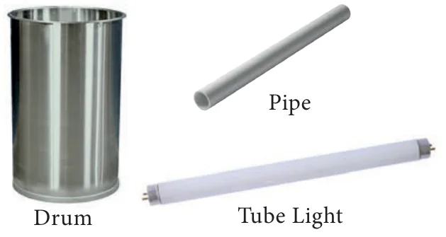
Observe the given figures in Fig.7.2 and identify the shape.
These objects resemble the shape of a cylinder.
Definition
A right circular cylinder is a solid generated by the revolution of a rectangle about one of its sides as axis.
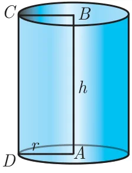
If the axis is perpendicular to the radius then the cylinder is called a right circular cylinder. In the Fig.7.3, \(AB = h\) represent the height and \(AD = r\) represent the radius of the cylinder.
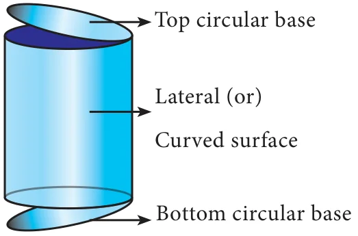
A solid cylinder is an object bounded by two circular plane surfaces and a curved surface. The area between the two circular bases is called its ‘Lateral Surface Area’ (L.S.A.) or ‘Curved Surface Area’ (C.S.A.).
Formation of a Right Circular Cylinder – Demonstration
- Take a rectangle sheet of a paper of length \(l\) and breadth \(b\).
- Revolve the paper about one of its sides, say \(b\) to complete a full rotation (without overlapping).
- The shape thus formed will be a right circular cylinder whose circumference of the base is \(l\) and the height is \(b\).
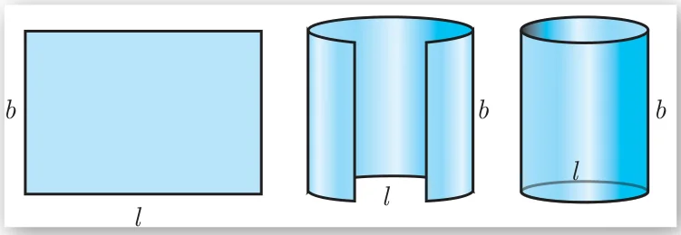
Surface Area of a Right Circular Cylinder
(i) Curved surface area
Curved surface area (C.S.A.) of a right circular cylinder
\(= \text{Area of the corresponding rectangle}\)
\(= l \times b\)
\(= 2\pi r \times h \quad (\because l \text{ is the circumference of the base, } b \text{ is the height}) \text{ [see Fig. 7.5]}\)
\(= 2\pi rh\)
C.S.A. of a right circular cylinder \(= 2\pi rh\) sq. units.
(ii) Total surface area
Total surface area refers to the sum of areas of the curved surface area and the two circular regions at the top and bottom.
That is, total surface area (T.S.A.) of right circular cylinder
\(= \text{C.S.A} + \text{Area of top circular region} + \text{Area of bottom circular region}\)
\(= 2\pi rh + \pi r^2 + \pi r^2 \quad \text{(Refer Fig. 7.4)}\)
\(= 2\pi rh + 2\pi r^2\)
\(= 2\pi r(h + r)\)
T.S.A. of a right circular cylinder \(= 2\pi r(h + r)\) sq. units
Note
- We always consider \(\pi = \frac{22}{7}\), unless otherwise stated.
- The term ‘surface area’ refers to ‘total surface area’.
Example 7.1
A cylindrical drum has a height of 20 cm and base radius of 14 cm. Find its curved surface area and the total surface area.
Solution
Given that, height of the cylinder \(h = 20\) cm ; radius \(r = 14\) cm
Now, C.S.A. of the cylinder \(= 2\pi rh\) sq. units
C.S.A. of the cylinder \(= 2 \times \frac{22}{7} \times 14 \times 20 = 2 \times 22 \times 2 \times 20 = 1760 \text{ cm}^2\)
T.S.A. of the cylinder \(= 2\pi r(h + r)\) sq. units
\(= 2 \times \frac{22}{7} \times 14 \times (20 + 14) = 2 \times \frac{22}{7} \times 14 \times 34\)
\(= 2992 \text{ cm}^2\)
Therefore, C.S.A. \(= 1760 \text{ cm}^2\) and T.S.A. \(= 2992 \text{ cm}^2\)
Example 7.2
The curved surface area of a right circular cylinder of height 14 cm is \(88 \text{ cm}^2\). Find the diameter of the cylinder.
Solution
Given that, C.S.A. of the cylinder \(= 88\) sq. cm
\(2\pi rh = 88\)
\(2 \times \frac{22}{7} \times r \times 14 = 88 \quad (h = 14 \text{ cm})\)
\(2r = \frac{88 \times 7}{22 \times 14} = 2\)
Therefore, diameter \(= 2\) cm
Example 7.3
A garden roller whose length is 3 m long and whose diameter is 2.8 m is rolled to level a garden. How much area will it cover in 8 revolutions?
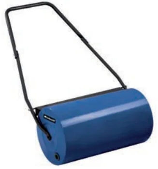
Solution
Given that, diameter \(d = 2.8\) m and height \(= 3\) m
radius \(r = 1.4\) m
Area covered in one revolution \(=\) curved surface area of the cylinder
\(= 2\pi rh\) sq. units
\(= 2 \times \frac{22}{7} \times 1.4 \times 3 = 26.4\)
Area covered in 1 revolution \(= 26.4 \text{ m}^2\)
Area covered in 8 revolutions \(= 8 \times 26.4 = 211.2\)
Therefore, area covered is \(211.2 \text{ m}^2\)
Thinking Corner
- When ‘\(h\)’ coins each of radius ‘\(r\)’ units and thickness 1 unit is stacked one upon the other, what would be the solid object you get? Also find its C.S.A.
- When the radius of a cylinder is double its height, find the relation between its C.S.A. and base area.
- Two circular cylinders are formed by rolling two rectangular aluminum sheets each of dimensions 12 m length and 5 m breadth, one by rolling along its length and the other along its width. Find the ratio of their curved surface areas.
7.2.2 Hollow Cylinder
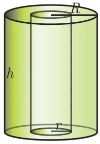
An object bounded by two co-axial cylinders of the same height and different radii is called a ‘hollow cylinder’.
Let \(R\) and \(r\) be the outer and inner radii of the cylinder. Let \(h\) be its height.
C.S.A of the hollow cylinder \(=\) outer C.S.A. of the cylinder \(+\) inner C.S.A. of the cylinder
\(= 2\pi Rh + 2\pi rh\)
C.S.A of a hollow cylinder \(= 2\pi(R + r)h\) sq. units
T.S.A. of the hollow cylinder \(=\) C.S.A. \(+\) Area of two rings at the top and bottom.
\(= 2\pi(R + r)h + 2\pi(R^2 - r^2)\)
T.S.A. of a hollow cylinder \(= 2\pi(R + r)(R - r + h)\) sq. units
Example 7.4
If one litre of paint covers \(10 \text{ m}^2\), how many litres of paint is required to paint the internal and external surface areas of a cylindrical tunnel whose thickness is 2 m, internal radius is 6 m and height is 25 m.
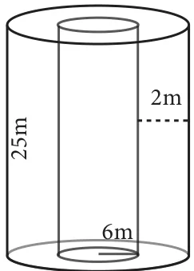
Solution
Given that, height \(h = 25\) m; thickness \(= 2\) m
internal radius \(r = 6\) m
Now, external radius \(R = 6 + 2 = 8\) m
C.S.A. of the cylindrical tunnel \(=\) C.S.A. of the hollow cylinder
C.S.A. of the hollow cylinder \(= 2\pi(R + r)h\) sq. units
\(= 2 \times \frac{22}{7}(8 + 6) \times 25\)
Hence, C.S.A. of the cylindrical tunnel \(= 2200 \text{ m}^2\)
Area covered by one litre of paint \(= 10 \text{ m}^2\)
Number of litres required to paint the tunnel \(= \frac{2200}{10} = 220\)
Therefore, 220 litres of paint is needed to paint the tunnel.
Progress Check
- Right circular cylinder is a solid obtained by revolving \(\underline{\qquad}\) about \(\underline{\qquad}\).
- In a right circular cylinder the axis is \(\underline{\qquad}\) to the diameter.
- The difference between the C.S.A. and T.S.A. of a right circular cylinder is \(\underline{\qquad}\).
- The C.S.A. of a right circular cylinder of equal radius and height is \(\underline{\qquad}\) the area of its base.
7.2.3 Right Circular Cone
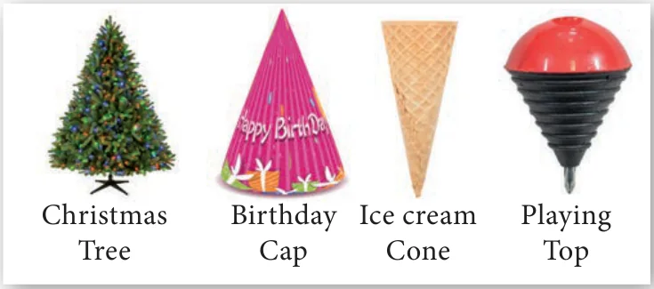
Observe the given figures in Fig.7.9 and identify which solid shape they represent?
These objects resemble the shape of a cone.
Definition
A right circular cone is a solid generated by the revolution of a right angled triangle about one of the sides containing the right angle as axis.
Formation of a Right Circular Cone – Demonstration
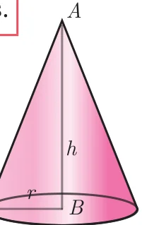
In Fig. 7.10, if the right triangle \(ABC\) revolves about \(AB\) as axis, the hypotenuse \(AC\) generates the curved surface of the cone represented in the diagram. The height of the cone is the length of the axis \(AB\), and the slant height is the length of the hypotenuse \(AC\).
Surface area of a right circular cone
Suppose the surface area of the cone is cut along the hypotenuse \(AC\) and then unrolled on a plane, the surface area will take the form of a sector \(ACD\), of which the radius AC and the arc \(CD\) are respectively the slant height and the circumference of the base of the cone.
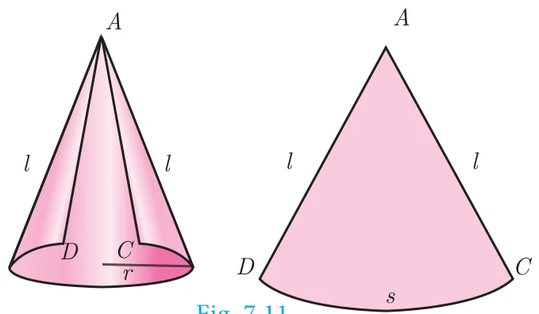
Here the sector of radius ‘\(l\)’ and arc length ‘\(s\)’ will be similar to a circle of radius \(l\).
(i) Curved surface area
\(\dfrac{\text{Area of the sector}}{\text{Area of the circle}} = \dfrac{\text{Arc length of the sector}}{\text{Circumference of the circle}}\)
\(\text{Area of the sector} = \dfrac{\text{Arc length of the sector}}{\text{Circumference of the circle}} \times \text{Area of the circle}\)
\(= \dfrac{s}{2\pi l} \times \pi l^2 = \dfrac{s}{2} \times l = \dfrac{2\pi r}{2} \times l \quad (\because s = 2\pi r)\)
\(\therefore\) Curved Surface Area of the cone \(=\) Area of the Sector \(= \pi rl\) sq. units.
C.S.A. of a right circular cone \(= \pi rl\) sq. units.
Thinking Corner
- Give practical example of solid cone.
- Find surface area of a cone in terms of its radius when height is equal to radius.
- Compare the above surface area with the area of the base of the cone.
Activity 1
- Take a semi-circular paper with radius 7 cm and make it a cone. Find the C.S.A. of the cone.
- Take a quarter circular paper with radius 3.5 cm and make it a cone. Find the C.S.A. of the cone.
Derivation of slant height ‘\(l\)’
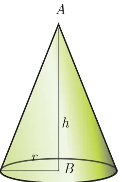
\(ABC\) is a right angled triangle, right angled at \(B\). The hypotenuse, base and height of the triangle are represented by \(l\), \(r\) and \(h\) respectively.
Now, using Pythagoras theorem in \(\Delta ABC\),
\(AC^2 = AB^2 + BC^2\)
\(l^2 = h^2 + r^2\)
\(l = \sqrt{h^2 + r^2}\) units
(ii) Total surface area
Total surface area of a cone \(= \text{C.S.A.} + \text{base area of the cone}\)
\(= \pi rl + \pi r^2 \quad (\because \text{the base is a circle})\)
T.S.A. of a right circular cone \(= \pi r(l + r)\) sq. units.
Example 7.5
The radius of a conical tent is 7 m and the height is 24 m. Calculate the length of the canvas used to make the tent if the width of the rectangular canvas is 4 m?
Solution
Let \(r\) and \(h\) be the radius and height of the cone respectively.
Given that, radius \(r = 7\) m and height \(h = 24\) m
Hence, \(l = \sqrt{r^2 + h^2}\)
\(= \sqrt{49 + 576}\)
\(l = \sqrt{625} = 25\) m
C.S.A. of the conical tent \(= \pi rl\) sq. units
Area of the canvas \(= \frac{22}{7} \times 7 \times 25 = 550 \text{ m}^2\)
Now, length of the canvas \(= \dfrac{\text{Area of the canvas}}{\text{width}} = \dfrac{550}{4} = 137.5\) m
Therefore, the length of the canvas is 137.5 m
Example 7.6
If the total surface area of a cone of radius 7cm is \(704 \text{ cm}^2\), then find its slant height.
Solution
Given that, radius \(r = 7\) cm
Now, total surface area of the cone \(= \pi r(l + r)\) sq. units
\(\text{T.S.A.} = 704 \text{ cm}^2\)
\(704 = \frac{22}{7} \times 7(l + 7)\)
\(32 = l + 7 \Rightarrow l = 25\) cm
Therefore, slant height of the cone is 25 cm.
Example 7.7
From a solid cylinder whose height is 2.4 cm and diameter 1.4 cm, a conical cavity of the same height and base is hollowed out (Fig.7.13). Find the total surface area of the remaining solid.
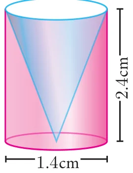
Solution
Let \(h\) and \(r\) be the height and radius of the cone and cylinder.
Let \(l\) be the slant height of the cone.
Given that, \(h = 2.4\) cm and \(d = 1.4\) cm ; \(r = 0.7\) cm
Total surface area of the remaining solid \(= \text{C.S.A. of the cylinder} + \text{C.S.A. of the cone} + \text{area of the bottom}\)
\(= 2\pi rh + \pi rl + \pi r^2\) sq. units
\(= \pi r(2h + l + r)\) sq. units
Now, \(l = \sqrt{r^2 + h^2} = \sqrt{0.49 + 5.76} = \sqrt{6.25} = 2.5\) cm
\(l = 2.5\) cm
Area of the remaining solid \(= \pi r(2h + l + r)\) sq. units
\(= \frac{22}{7} \times 0.7 \times [(2 \times 2.4) + 2.5 + 0.7]\)
\(= 17.6\)
Therefore, total surface area of the remaining solid is \(17.6 \text{ cm}^2\)
Progress Check
- Right circular cone is a solid obtained by revolving \(\underline{\qquad}\) about \(\underline{\qquad}\).
- In a right circular cone the axis is \(\underline{\qquad}\) to the diameter.
- The difference between the C.S.A. and T.S.A. of a cone is \(\underline{\qquad}\).
- When a sector of a circle is transformed to form a cone, then match the conversions taking place between the sector and the cone.
Sector Cone Radius Circumference of the base Area Slant height Arc length Curved surface area
7.2.4 The Sphere
Definition
A sphere is a solid generated by the revolution of a semicircle about its diameter as axis.
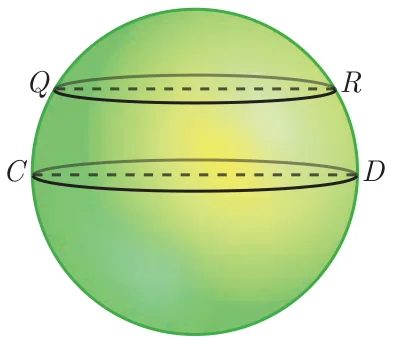
Every plane section of a sphere is a circle. The line of section of a sphere by a plane passing through the centre of the sphere is called a great circle all other plane sections are called small circles.
As shown in the diagram, circle with \(CD\) as diameter is a great circle, whereas, the circle with \(QR\) as diameter is a small circle.
Surface area of a sphere
Archimedes Proof
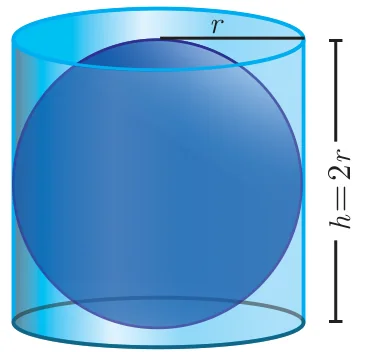
Place a sphere inside a right circular cylinder of equal diameter and height. Then the height of the cylinder will be the diameter of the sphere. In this case, Archimedes proved that the outer area of the sphere is same as curved surface area of the cylinder.
Surface area of sphere \(=\) curved surface area of cylinder
\(= 2\pi rh = 2\pi r(2r)\)
Surface area of a sphere \(= 4\pi r^2\) sq.units
Activity 2
- Take a sphere of radius ‘\(r\)’.
- Take a cylinder whose base diameter and height are equal to the diameter of the sphere.
- Now, roll thread around the surface of the sphere and the cylinder without overlapping and leaving space between the threads.
- Now compare the length of the two threads in both the cases.
- Use this information to find surface area of sphere.
7.2.5 Hemisphere
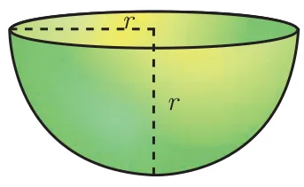
A section of the sphere cut by a plane through any of its great circle is a hemisphere.
By doing this, we observe that a hemisphere is exactly half the portion of the sphere.
Curved surface area of hemisphere \(= \dfrac{\text{C.S.A. of the sphere}}{2} = \dfrac{4\pi r^2}{2}\)
C.S.A. of a hemisphere \(= 2\pi r^2\) sq.units
Total surface area of hemisphere \(= \text{C.S.A.} + \text{Area of top circular region}\)
\(= 2\pi r^2 + \pi r^2\)
T.S.A. of a hemisphere \(= 3\pi r^2\) sq.units
7.2.6 Hollow Hemisphere
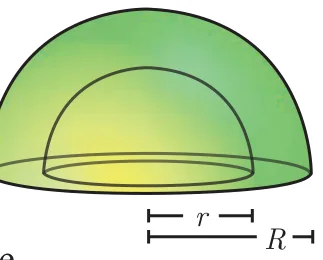
Let the inner radius be \(r\) and outer radius be \(R\), then thickness \(= R - r\)
Therefore, C.S.A. \(= \text{Area of external hemisphere} + \text{Area of internal hemisphere}\)
\(= 2\pi R^2 + 2\pi r^2\)
C.S.A. of a hollow hemisphere \(= 2\pi(R^2 + r^2)\) sq. units
\(\text{T.S.A.} = \text{C.S.A.} + \text{Area of annulus region}\)
\(= 2\pi(R^2 + r^2) + \pi(R^2 - r^2)\)
\(= \pi[2R^2 + 2r^2 + R^2 - r^2]\)
T.S.A. of a hollow hemisphere \(= \pi(3R^2 + r^2)\) sq. units
Example 7.8
Find the diameter of a sphere whose surface area is \(154 \text{ m}^2\).
Solution
Let \(r\) be the radius of the sphere.
Given that, surface area of sphere \(= 154 \text{ m}^2\)
\(4\pi r^2 = 154\)
\(4 \times \frac{22}{7} \times r^2 = 154\)
\(\Rightarrow r^2 = 154 \times \frac{1}{4} \times \frac{7}{22}\)
\(r^2 = \frac{49}{4}\) we get \(r = \frac{7}{2}\)
Therefore, diameter is 7 m
Activity 3
Using a globe, list any two countries in the northern and southern hemispheres.
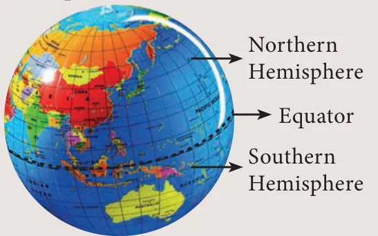
Example 7.9
The radius of a spherical balloon increases from 12 cm to 16 cm as air being pumped into it. Find the ratio of the surface area of the balloons in the two cases.
Solution
Let \(r_1\) and \(r_2\) be the radii of the balloons.
Given that, \(\frac{r_1}{r_2} = \frac{12}{16} = \frac{3}{4}\)
Now, ratio of C.S.A. of balloons \(= \dfrac{4\pi r_1^2}{4\pi r_2^2} = \dfrac{r_1^2}{r_2^2} = \left(\dfrac{r_1}{r_2}\right)^2 = \left(\dfrac{3}{4}\right)^2 = \dfrac{9}{16}\)
Therefore, ratio of C.S.A. of balloons is 9:16.
Thinking Corner
- Find the value of the radius of a sphere whose surface area is \(36\pi\) sq. units.
- How many great circles can a sphere have?
- Find the surface area of the earth whose diameter is 12756 kms.
Progress Check
- Every section of a sphere by a plane is a \(\underline{\qquad}\).
- The centre of a great circle is at the \(\underline{\qquad}\) of the sphere.
- The difference between the T.S.A. and C.S.A. of hemisphere is \(\underline{\qquad}\).
- The ratio of surface area of a sphere and C.S.A. of hemisphere is \(\underline{\qquad}\).
- A section of the sphere by a plane through any of its great circle is \(\underline{\qquad}\).
Example 7.10
If the base area of a hemispherical solid is 1386 sq. metres, then find its total surface area?
Solution
Let \(r\) be the radius of the hemisphere.
Given that, base area \(= \pi r^2 = 1386\) sq. m
\(\text{T.S.A.} = 3\pi r^2\) sq.m
\(= 3 \times 1386 = 4158\)
Therefore, T.S.A. of the hemispherical solid is \(4158 \text{ m}^2\).
Note
For finding the C.S.A. and T.S.A. of a hollow sphere, the formulla for finding the surface area of a sphere can be used.
Thinking Corner
- Shall we get a hemisphere when a sphere is cut along the small circle?
- T.S.A of a hemisphere is equal to how many times the area of its base?
- How many hemispheres can be obtained from a given sphere?
Example 7.11
The internal and external radii of a hollow hemispherical shell are 3 m and 5 m respectively. Find the T.S.A. and C.S.A. of the shell.
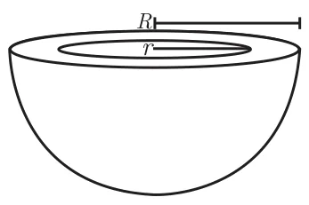
Solution
Let the internal and external radii of the hemispherical shell be \(r\) and \(R\) respectively.
Given that, \(R = 5\) m, \(r = 3\) m
C.S.A. of the shell \(= 2\pi(R^2 + r^2)\) sq. units
\(= 2 \times \frac{22}{7} \times (25 + 9) = 213.71\)
T.S.A. of the shell \(= \pi(3R^2 + r^2)\) sq. units
\(= \frac{22}{7}(75 + 9) = 264\)
Therefore, C.S.A. \(= 213.71 \text{ m}^2\) and T.S.A. \(= 264 \text{ m}^2\).
Example 7.12
A sphere, a cylinder and a cone are of the same height which is equal to its radius, where as cone and cylinder are of same height. Find the ratio of their curved surface areas.
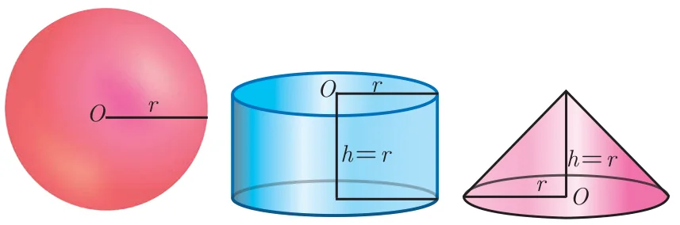
Solution
Required Ratio \(=\) C.S.A. of the sphere : C.S.A. of the cylinder : C.S.A. of the cone
\(= 4\pi r^2 : 2\pi rh : \pi rl \qquad (l = \sqrt{r^2 + h^2} = \sqrt{2r^2} = \sqrt{2}\,r)\)
\(= 4\pi r^2 : 2\pi r^2 : \pi r\sqrt{2}\,r\)
\(= 4\pi r^2 : 2\pi r^2 : \sqrt{2}\pi r^2\)
\(= 4 : 2 : \sqrt{2} = 2\sqrt{2} : \sqrt{2} : 1\)
7.2.7 Frustum of a right circular cone
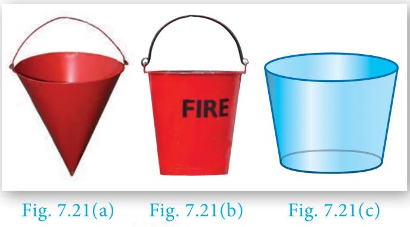
In olden days a cone shaped buckets [Fig.7.21(a)] filled with sand / water were used to extinguish fire during fire accidents. Later, it was reshaped to a round shaped bottom [Fig.7.21(b)] to increase its volume.
The shape in [Fig.7.21(c)] resembling a inverted bucket is called as a frustrum of a cone.
The objects which we use in our daily life such as glass, bucket, street cone are examples of frustum of a cone. (Fig.7.22)
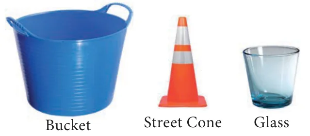
Definition
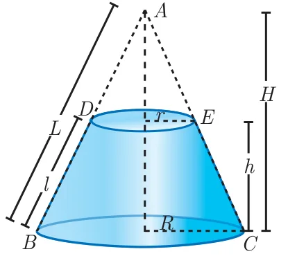
When a cone ABC is cut through by a plane parallel to its base, the portion of the cone DECB between the cutting plane and the base is called a frustum of the cone.
Surface area of a frustum
Let \(R\) and \(r\) be radii of the base and top region of the frustum \(DECB\) respectively, \(h\) is the height and \(l\) is the slant height of the same.
Therefore, C.S.A. \(= \frac{1}{2}\) (sum of the perimeters of base and top region) \(\times\) slant height
\(= \frac{1}{2}(2\pi R + 2\pi r)l\)
C.S.A. of a frustum \(= \pi(R + r)l\) sq. units, where, \(l = \sqrt{h^2 + (R - r)^2}\)
\(\text{T.S.A.} = \text{C.S.A.} + \text{Area of the bottom circular region} + \text{Area of the top circular region.}\)
T.S.A. of a frustum \(= \pi(R + r)l + \pi R^2 + \pi r^2\) sq. units, where, \(l = \sqrt{h^2 + (R - r)^2}\)
Example 7.13
The slant height of a frustum of a cone is 5 cm and the radii of its ends are 4 cm and 1 cm. Find its curved surface area.
Solution
Let \(l\), \(R\) and \(r\) be the slant height, top radius and bottom radius of the frustum.
Given that, \(l = 5\) cm, \(R = 4\) cm, \(r = 1\) cm
Now, C.S.A. of the frustum \(= \pi(R + r)l\) sq. units
\(= \frac{22}{7} \times (4 + 1) \times 5\)
\(= \frac{550}{7}\)
Therefore, C.S.A. \(= 78.57 \text{ cm}^2\)
Thinking Corner
- Give two real life examples for a frustum of a cone.
- Can a hemisphere be considered as a frustum of a sphere.
Example 7.14
An industrial metallic bucket is in the shape of the frustum of a right circular cone whose top and bottom diameters are 10 m and 4 m and whose height is 4 m. Find the curved and total surface area of the bucket.
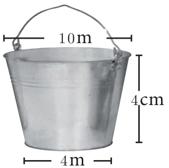
Solution
Let \(h\), \(l\), \(R\) and \(r\) be the height, slant height, top radius and bottom radius of the frustum.
Given that, diameter of the top \(= 10\) m; radius of the top \(R = 5\) m.
diameter of the bottom \(= 4\) m; radius of the bottom \(r = 2\) m, height \(h = 4\) m
Now, \(l = \sqrt{h^2 + (R - r)^2}\)
\(= \sqrt{4^2 + (5 - 2)^2}\)
\(l = \sqrt{16 + 9} = \sqrt{25} = 5\) m
\(\text{C.S.A.} = \pi(R + r)l\) sq. units
\(= \frac{22}{7}(5 + 2) \times 5 = 110 \text{ m}^2\)
\(\text{T.S.A.} = \pi(R + r)l + \pi R^2 + \pi r^2\) sq. units
\(= \frac{22}{7}[(5 + 2)5 + 25 + 4] = \frac{1408}{7} = 201.14\)
Therefore, C.S.A. \(= 110 \text{ m}^2\) and T.S.A. \(= 201.14 \text{ m}^2\)
Progress Check
- The portion of a right circular cone intersected between two parallel planes is \(\underline{\qquad}\).
- How many frustums can a right circular cone have?